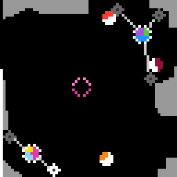

r11l
Click diamonds to move them; the level is cleared when each group's jar presses on a locked target ring.
6 levels · 9 rules · all levels replayed in Lean
Replay
The certified run that cleared every level, one action at a time. Beside each step: the rules of the model that explain it; they are also marked in the rule list below.

Explained by
Press Play or step to load the run. Keys, while the player is on screen: ← → step, Space play / pause. A click is circled; cells that changed are outlined.
How it plays
There are several groups of diamonds on the board, each group leading a jar, and the jar always stays at the centre of this group of diamonds. The jar cannot be clicked, only the diamonds can be moved: first click a diamond to select it, then click a piece of empty ground, it jumps over, and the jar immediately moves to the new centre. When a jar lands on a paint block, it covers itself with the colour of that block, and the paint block disappears with it. When the colour on the jar matches the colour a target ring wants and it presses on that ring's target centre, the target ring locks. The level is cleared when each group's jar presses on a locked target ring. Grey hard walls cannot be stepped on by anyone, and light-blue soft-ground diamonds can be stood on but a jar cannot press onto them; a move that would step on these places is voided. The vertical bar on the left records how many clicks have been made.

Model
The final model: 6 object types and 9 rules. Each rule is a Python check against every recorded step; 8 of them are translated into Lean (the paper's per-game table). Code under a rule is the file of the same name in the agent's Lean project.
Object types
- Click counter
spentClicks made this level; the vertical bar at far left, shorter with more clicks.Lean · World.lean
-- World.spent : Nat structure World where spent : Nat selected : Cell groups : List Group blobs : List Blob reticles : List Reticle deriving DecidableEq, Repr - Selected diamond
selectedThe diamond selected now, drawn white; clicking empty ground moves it.Lean · Cell.lean
-- World.selected : Cell structure Cell where r : Nat c : Nat deriving DecidableEq, Repr - Groups
groupsEach group's diamond positions plus the colour on the jar they lead.Lean · Group.lean
-- World.groups : List Group structure Group where anchors : List Cell ink : List Nat deriving DecidableEq, Repr - Paint blocks
blobsPaint blocks still on the board, jar-sized but tied to no diamond.Lean · Blob.lean
-- World.blobs : List Blob structure Blob where center : Cell ink : List Nat deriving DecidableEq, Repr - Target rings
reticlesWhere jars must go: the colours each target ring wants, and whether it is locked.Lean · Reticle.lean
-- World.reticles : List Reticle structure Reticle where center : Cell colors : Option (List Nat) deriving DecidableEq, Repr - Terrain
terrainBlack ground: anyone stands; grey hard walls: no one; light-blue soft ground: diamonds only.Lean · Terrain.lean
structure Board where wall : List Nat soft : List Nat deriving Repr def Board.bit (rows : List Nat) (r c : Nat) : Bool := (rows.getD r 0).testBit c
Rules
click_selectsClicking a diamond selects it; no diamond or jar moves.Python
from __future__ import annotations from derive.hit import hit from objects import click_cell from .. import _scope from .._common import anchor_sets … BOOK = ["click_on_diamond_selects"] … def scope_(w, action, nw, ctx): return _scope.on_diamond(w, action, ctx) def assert_(w, action, nw, ctx): return tuple(nw.selected) == tuple(hit(w, click_cell(action))) and anchor_sets(w) == anchor_sets(nw)Lean · ClickSelects.lean
import Obj.World def hitAnchor (w : World) (p : Cell) : Option Cell := w.anchors.find? (fun a => manhattan a p ≤ 2) def clickSelect (w : World) (a : Cell) : World := { w with selected := a }click_movesClicking empty ground jumps the selected diamond there; covering other things does not block it.Python
from __future__ import annotations from derive.place import placed from objects import click_cell from .. import _scope from .._common import anchor_sets … BOOK = ["click_places_a", "other_stays_otherwise", "object_overlap_does_not_reject_move", "m_is_centroid"] HISTORY = [ … … … … … … ] def scope_(w, action, nw, ctx): why, b = _scope.legality(w, action, nw, ctx) … def assert_(w, action, nw, ctx): p = click_cell(action) i, new, _ = placed(w, p) want = sorted([tuple(sorted(tuple(a) for a in g.anchors)) for j, g in enumerate(w.groups) if j != i] + [tuple(new)]) return tuple(nw.selected) == tuple(p) and anchor_sets(nw) == wantLean · ClickMoves.lean
import Obj.World def groupOf (w : World) (s : Cell) : Option Nat := w.groups.findIdx? (fun g => g.anchors.contains s) def movedAnchors (g : Group) (s p : Cell) : List Cell := g.anchors.map (fun a => if a = s then p else a) def landing (w : World) (i : Nat) (p : Cell) : Cell := centroid (movedAnchors (w.groups.getD i ⟨[], []⟩) w.selected p) def clickMove (w : World) (i : Nat) (p : Cell) : World := { w with selected := p groups := mapAt (fun g => { g with anchors := movedAnchors g w.selected p }) i w.groups }click_rejectedDiamonds hitting hard walls, or jars hitting hard walls or soft ground, void the click.Python
from __future__ import annotations from .. import _scope from .._common import anchor_sets … BOOK = ["move_rejected_on_blocked_terrain"] … def scope_(w, action, nw, ctx): why, b = _scope.legality(w, action, nw, ctx) … def assert_(w, action, nw, ctx): return tuple(nw.selected) == tuple(w.selected) and anchor_sets(w) == anchor_sets(nw)Lean · ClickRejected.lean
import Obj.World def Board.wallAt (b : Board) (q : Cell) : Bool := Board.bit b.wall q.r q.c def Board.softAt (b : Board) (q : Cell) : Bool := Board.bit b.soft q.r q.c def blocked (b : Board) (p c : Cell) : Bool := (footprint diamondOffs p).any (fun q => b.wallAt q) || (footprint discOffs c).any (fun q => b.wallAt q || b.softAt q) def clickReject (w : World) : World := wabsorbA jar landing on a paint block takes its colour, and the paint block disappears.Python
from __future__ import annotations from derive.outcome import blob_at, overwrite from derive.place import placed from derive.seen import ink_agrees from objects import click_cell from .. import _scope from .._common import same_blobs … BOOK = ["circle_absorbs_blob_ink", "decoy_silhouettes_are_fixed", "circle_ring_translates", "road_covers_fresh_ink"] HISTORY = [ … … … ] def _landing(w, action, nw, ctx): if _scope.on_diamond(w, action, ctx) is None: return None _, b = _scope.legality(w, action, nw, ctx) return None if b else placed(w, click_cell(action)) def scope_(w, action, nw, ctx): return _scope.in_level(action, ctx) def assert_(w, action, nw, ctx): got = {tuple(sorted(tuple(a) for a in g.anchors)): g.ink for g in nw.groups} moved = _landing(w, action, nw, ctx) k = blob_at(w, moved[2]) if moved else None for i, g in enumerate(w.groups): key = (tuple(tuple(x) for x in moved[1]) if moved and moved[0] == i else tuple(sorted(tuple(a) for a in g.anchors))) want = overwrite(g.ink, w.blobs[k].ink) if (k is not None and moved[0] == i) else g.ink if key not in got or not ink_agrees(want, got[key]): return False if k is None: return same_blobs(w, nw) rest = [b for j, b in enumerate(w.blobs) if j != k] return ([tuple(b.center) for b in rest] == [tuple(b.center) for b in nw.blobs] and all(ink_agrees(a.ink, b.ink) for a, b in zip(rest, nw.blobs)))Lean · Absorb.lean
import Obj.World def overwrite (ink blob : List Nat) : List Nat := List.zipWith (fun a b => if b = 0 then a else b) ink blob def absorb (w : World) (i : Nat) (c : Cell) : World := match w.blobs.find? (fun x => x.center = c) with | none => w | some x => { w with groups := mapAt (fun g => { g with ink := overwrite g.ink x.ink }) i w.groups blobs := w.blobs.filter (fun y => y.center ≠ c) }barEvery click, including voided ones, counts one; the counter resets on a new level.Python
from __future__ import annotations from .. import _scope … BOOK = ["bar_drains_one", "bar_refills_on_levelup"] HISTORY = [ … … … … … ] def scope_(w, action, nw, ctx): return _scope.click(action, ctx) def assert_(w, action, nw, ctx): return nw.spent == (0 if ctx["kind"] == "levelup" else w.spent + 1)Lean · Bar.lean
import Obj.World def tick (w : World) : World := { w with spent := w.spent + 1 }terrain_staticWithin a level, every cell visible in both frames keeps its colour.Python
from __future__ import annotations from .. import _scope … BOOK = ["terrain_is_static", "vacated_reverts_to_ground"] … … def scope_(w, action, nw, ctx): return _scope.in_level(action, ctx) def assert_(w, action, nw, ctx): for a, b in zip(w.terrain.rows, nw.terrain.rows): for x, y in zip(a, b): if x is not None and y is not None and x != y: return False return TrueLean · TerrainStatic.lean
import Step import Obj.World theorem terrain_static (b₁ b₂ : Board) (h : ∀ q, b₁.wallAt q = b₂.wallAt q ∧ b₁.softAt q = b₂.softAt q) (w : World) (p : Cell) : step b₁ w p = step b₂ w p := by have hb : ∀ c, blocked b₁ p c = blocked b₂ p c := by intro c have hw : (fun q => b₁.wallAt q) = (fun q => b₂.wallAt q) := funext fun q => (h q).1 have hs : (fun q => b₁.wallAt q || b₁.softAt q) = (fun q => b₂.wallAt q || b₂.softAt q) := funext fun q => by rw [(h q).1, (h q).2] unfold blocked rw [hw, hs] unfold step simp only [hb]lockA jar on a target centre whose colours match the ring's locks that ring.Python
from __future__ import annotations from derive.outcome import blob_at, overwrite, reticle_for from derive.place import placed from objects import click_cell from .. import _scope … BOOK = ["lock_turns_reticle_zero", "target_pairs_by_sector_colors"] … … def expected(w, action, nw, ctx): rets = [(tuple(t.center), t.locked) for t in w.reticles] if _scope.on_diamond(w, action, ctx) is None: return sorted(rets) _, b = _scope.legality(w, action, nw, ctx) if b: return sorted(rets) i, _, c = placed(w, click_cell(action)) ink = w.groups[i].ink k = blob_at(w, c) if k is not None: ink = overwrite(ink, w.blobs[k].ink) j = reticle_for(w, c, ink) if j is not None: rets[j] = (rets[j][0], True) return sorted(rets) def scope_(w, action, nw, ctx): why = _scope.in_level(action, ctx) if why: return why if _scope.on_diamond(w, action, ctx) is None: return None why, _ = _scope.legality(w, action, nw, ctx) return why def assert_(w, action, nw, ctx): return expected(w, action, nw, ctx) == sorted((tuple(t.center), t.locked) for t in nw.reticles)Lean · Lock.lean
import Obj.World def sameSet (xs ys : List Nat) : Bool := xs.all (ys.contains ·) && ys.all (xs.contains ·) def pairs (ink : List Nat) : Option (List Nat) → Bool | none => false | some cs => sameSet ink cs def lock (w : World) (i : Nat) (c : Cell) : World := let ink := (w.groups.getD i ⟨[], []⟩).ink { w with reticles := w.reticles.map (fun t => if t.center = c && pairs ink t.colors then { t with colors := none } else t) }level_clearThe level is cleared exactly when every group's jar presses on a locked target ring.Python
from __future__ import annotations from derive.center import center from derive.outcome import blob_at, overwrite, reticle_for from derive.place import placed from objects import click_cell from .. import _scope … BOOK = ["levelup_iff_mids_on_targets"] … … def all_home(w, action, nw, ctx) -> bool: locked = {tuple(t.center) for t in w.reticles if t.locked} centers = [tuple(center(g)) for g in w.groups] why, b = _scope.legality_any(w, action, nw, ctx) if why is None and not b: i, _, c = placed(w, click_cell(action)) ink = w.groups[i].ink k = blob_at(w, c) if k is not None: ink = overwrite(ink, w.blobs[k].ink) if reticle_for(w, c, ink) is not None: locked.add(tuple(c)) centers[i] = tuple(c) return all(c in locked for c in centers) def scope_(w, action, nw, ctx): why, _ = _scope.legality_any(w, action, nw, ctx) … def assert_(w, action, nw, ctx): return all_home(w, action, nw, ctx) == (ctx["kind"] in ("levelup", "win"))Lean · LevelClear.lean
import Obj.World def isGoal (w : World) : Bool := w.groups.all (fun g => w.reticles.any (fun t => t.center = g.center && t.locked))resetReset returns to the opening of level 1, with the bar full.Python
from __future__ import annotations from .._common import anchor_sets, same_blobs … BOOK = [] … IN_MODEL = False … def scope_(w, action, nw, ctx): … def assert_(w, action, nw, ctx): o = ctx.get("opening") if o is None: return False return (tuple(nw.selected) == tuple(o.selected) and anchor_sets(nw) == anchor_sets(o) and same_blobs(nw, o) and nw.spent == o.spent and sorted((tuple(t.center), t.colors) for t in nw.reticles) == sorted((tuple(t.center), t.colors) for t in o.reticles))Lean · Reset.lean
import Obj.World
Code is shown with comments and the agent's notes removed; the files as written are in the archive under Check it yourself.
Proof
For every level, Lean starts from the level's first screen, applies the model's rules to the certified actions, and checks that every computed state agrees with the recorded frame on the components the model represents, and that the last one wins. Each theorem is closed by the Lean kernel and is a statement about the learned model.
Every level can be won
theorem L0_winnable : Winnable (levelBoard 0) (L0_start : World) := …theorem L1_winnable : Winnable (levelBoard 1) (L1_start : World) := …theorem L2_winnable : Winnable (levelBoard 2) (L2_start : World) := …theorem L3_winnable : Winnable (levelBoard 3) (L3_start : World) := …theorem L4_winnable : Winnable (levelBoard 4) (L4_start : World) := …theorem L5_winnable : Winnable (levelBoard 5) (L5_start : World) := …theorem twin_winnable : Winnable blankBoard (twin : World) := …What cannot be won under the model
theorem unsolvable_by_noInk (b : Board) (w : World) (h : NoInk w) :
∀ as : List Cell, everGoal b w as = false := …theorem stuck_unsolvable : ∀ as : List Cell, everGoal blankBoard (stuck : World) as = false := …Statements only; the proofs and the full Lean project are in the archive, with the steps to re-run them, under Check it yourself.
Check it yourself
Everything on this page comes from files you can download and check. The archive holds the agent's files: the recorded run, the concept book, the concept sources, the Lean project and the sealed model file, plus the record of our kernel check.
Download r11l.zip 0.3 MB · 58 files
Re-run the proof
Before you start: our run of this check took 252 s and 16.8 GB of memory at its peak (2026-10-24).
- Download r11l.zip and unpack it. The model and its theorems are in
archive/r11l-20260907/formal/Game.lean. Before changing it, check that its SHA-256 is9ce832789da3054c5316e1f8848a8eb309d3ad5137cc7006eed99f264c721ed4 - Install Lean with elan, then the version named in the archive's
lean-toolchain:elan toolchain install leanprover/lean4:v4.34.0 - Copy the model file to
Check.leanand append these two lines to the copy:#print axioms consistent #print axioms faithful - In the folder that holds
Check.lean, run:lean +leanprover/lean4:v4.34.0 -M60000 Check.lean - Lean should finish without errors and print:
'consistent' depends on axioms: [propext] 'faithful' depends on axioms: [propext]
What a pass establishes
consistent: for every recorded transition, as read by the agent's parser and with duplicates removed, every rule whose condition holds also has its effect hold. faithful: the certified run, recomputed step by step from the first screen of each level, matches the record and ends in a win. Axioms used: propext, all among Lean's standard ones.
What it does not establish: that the parser reads the screens correctly (that step runs in Python, outside Lean), or that a rule whose condition never occurs in the record is right. The Python file that produced the readings inside the model file is in the archive at meta/repair-20260928/lib/r11l-20260907/_lib.py.